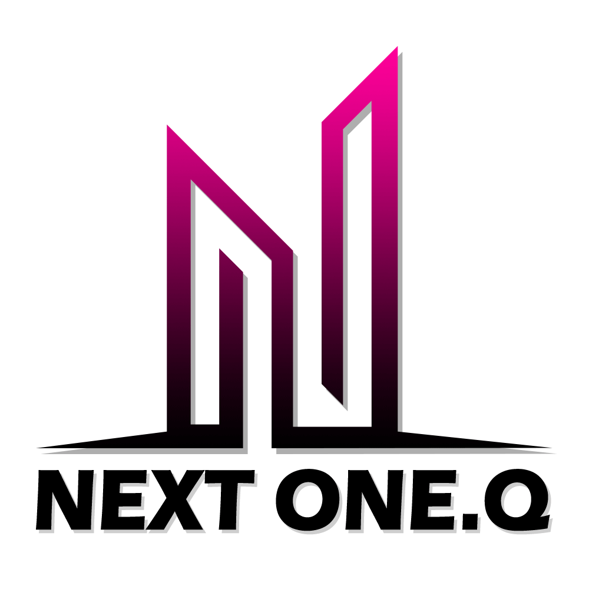

Portfolio
작업 결과로 보여주는 생생한 현장
어떠한 악조건의 공간도 원래의 위생 등급으로 복구합니다.



단순 청소를 넘어 최첨단 장비와 데이터 분석으로 설계되는
B2B 맞춤형 3D 위생 솔루션 파트너, NEXT ONE Q.
기술과 인프라의 차이가 무결점의 차이를 만듭니다.
하청이나 단순 일용직 투입은 원천 배제합니다. 체계적인 화학·위생 전공자 위주의 고도 트레이닝을 마친 정규직 기술진이 직접 시공을 설계합니다.
생산라인의 정지시간(Downtime)은 기업의 큰 손실입니다. 정밀 세정팀이 주말, 야간, 연휴 상관없이 상시 투입 가능 대기 체계를 구축하고 있습니다.
작업 전후 오염 측정기(ATP) 및 화학 잔류 분석 검수 데이터를 제공하며, 만족스럽지 못한 지점이 발견될 시 즉각 100% 무상 리터치 시공을 약속합니다.
각 현장의 오염 성상에 정확히 맞춤 설계된 고유의 특수 약품 및 최첨단 기계 포트폴리오를 제안합니다.
스마트 오피스, 의료기관, 쇼핑센터 전용. 오염 발생 주기 시뮬레이션 데이터에 입각한 고밀도 케어 서비스.
상세 견적 분석UHP(초고압 세척기) 및 드라이아이스 펠릿 분사를 사용한 설비 비가동 가동부의 정밀 수분 제어 세척 공정.
상세 견적 분석화재 발생 이후 잔존 유해 탄화물질, 그을음 중화 및 냄새 탈취를 위한 오존/특수 화학 탈취 시스템 시공.
상세 견적 분석화재 리스크를 야기하는 대형 후드 유증기 유지 찌꺼기를 고열 스팀과 화학적 분해(CIP) 공정으로 복원.
상세 견적 분석데이터는 타협하지 않습니다. NEXT ONE Q의 증명된 가치입니다.
어떠한 악조건의 공간도 원래의 위생 등급으로 복구합니다.
업계 1군 기업들이 NEXT ONE Q의 데이터 품질 솔루션을 채택했습니다.
신청 내용을 남겨주시면 정규 엔지니어가 2시간 내로 연락드립니다.